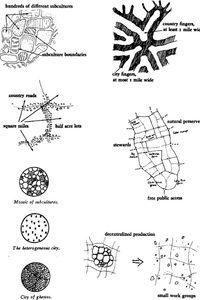
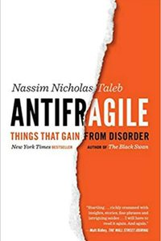

{{ j.company }}
{{ j.role }}
{{ j.period }}
- —{{ p }}

Product engineer and systems thinker who ships AI-powered products end-to-end. 12+ years building mobile apps used by 1M+ people; now designing LLM features on the Claude API and orchestrating agentic development with Claude Code. I own problems, not tickets — and I'm ready to lead or mentor AI adoption in a team. Recharged after a break and ready for new challenges.
The development process is a system with feedback. I design the loop; autonomous Claude Code sessions run it.
Trained to model systems with feedback loops — the same lens I use for products and for agentic development processes.


Reading on systems: The Goal, A Pattern Language, Antifragile.
Off-screen: forest hiking, e-bike rides, guitar, volunteering — and AI experiments.